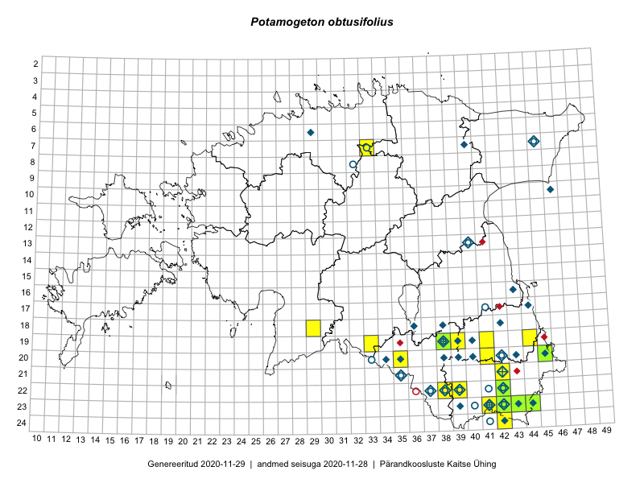

Potamogeton obtusifolius
Uuendatud: 2016-12-02
Kaardile koondatud taksonid: Potamogeton obtusifolius Mert. & W.D.J.Koch

Kaart põhineb 4 vaatlusel. Taksonit on leitud 4 ruudust.
Viited andmebaasikirjetele